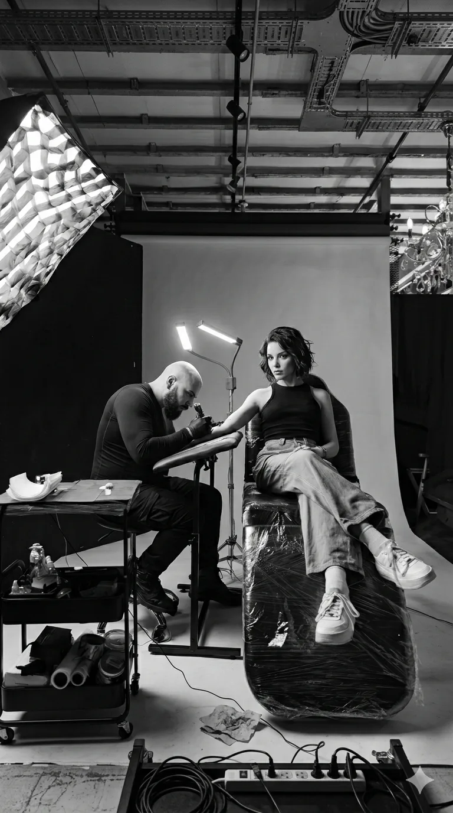
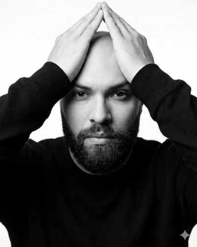

Ich bin Giuseppe. Kolumbianische Wurzeln, europäisches Leben. Die Nadel hat mich gefunden, als ich sie am wenigsten gesucht habe. Heute, nach über zehn Jahren, ist sie ein Teil von mir. Und jeder Mensch, den ich tätowiere, wird Teil einer großen Familie.
10+
Jahre Erf.
1.5k
Tattoos
100%
Custom
Spezialist für kontrastreichen Black & Grey Realismus.
Hamburg
1.000 €
Ganztag · ca. 6–7 Stunden
Zürich
1.500 CHF
Ganztag · ca. 6–7 Stunden
Anzahlung erforderlich · Kostenlose Beratung vorab
Größere Projekte (z.B. Sleeves) — mehrere Sessions, Preis auf Anfrage
Kostenlose Beratung — ohne Verpflichtung
Bevor ich auch nur einen Strich zeichne, reden wir.
Anfrage stellen
Füll das Formular vollständig aus: Körperstelle, Größe, Stil und deine Idee. Je genauer du bist, desto gezielter kann ich antworten. Referenzbilder sind willkommen — auch wenn es nur eine Stimmung ist. Ich lese jede Anfrage persönlich und antworte nie mit einer Standardantwort.
Gespräch & Anzahlung
Ich melde mich normalerweise innerhalb von 24–48 Stunden. Wir besprechen deine Idee in Ruhe — per Nachricht, Telefon oder Video, ganz wie du möchtest. Ich beantworte alle deine Fragen zu Größe, Platzierung und Ablauf. Sobald wir uns einig sind, sicherst du deinen Termin mit einer Anzahlung. Ohne Anzahlung kein fester Termin — das schützt beide Seiten.
Design & Session
Ich entwickle das Motiv exklusiv für dich — kein Template, keine Wiederholung. Am Sessiontag zeige ich dir das finale Design. Wir gehen es gemeinsam durch und passen es bei Bedarf an. Erst wenn du wirklich zufrieden bist, fangen wir an. Während der Session sorge ich für eine entspannte Atmosphäre — Musik, Pausen, alles kein Problem.
Heilung & danach
Nach der Session erkläre ich dir persönlich die Pflege und du bekommst alles schriftlich. Die ersten zwei Wochen sind entscheidend — tägliches Reinigen, parfumfreie Creme, kein Schwimmbad, kein direktes Sonnenlicht. Ein gut gepflegtes Tattoo hält Kontrast und Schärfe über viele Jahre. Bei Fragen nach der Heilung bin ich immer erreichbar — auch Wochen oder Monate später.
Ich arbeite mit einem Ganztagspreis (ca. 6–7 Stunden): 1.000 € in Hamburg, 1.500 CHF in Zürich. Kleinere Motive, die weniger Zeit brauchen, können günstiger sein — das besprechen wir individuell in der kostenlosen Beratung. Größere Projekte wie Sleeves oder Rücken (mehrere Sessions): Preis auf Anfrage. Der Preis beinhaltet immer das Custom-Design, die Beratung und die Session selbst — ohne Überraschungen danach.
Je nach Auslastung liegt die Wartezeit zwischen 4 und 12 Wochen. Für große Projekte oder bestimmte Wunschtermine: so früh wie möglich anfragen. Kurzfristig kann manchmal etwas bei Absagen freiwerden — es lohnt sich zu fragen. Eine Anfrage stellen kostet nichts und verpflichtet zu nichts.
Sehr gerne — Referenzbilder helfen mir, deinen Geschmack und deine Stimmung zu verstehen. Ich kopiere keine Motive anderer Künstler 1:1. Stattdessen nutze ich deine Vorlage als Ausgangspunkt und entwickle daraus etwas Eigenes, das zu deiner Körperform, deiner Haut und deiner Geschichte passt. Auch unfertige Ideen oder eine Sammlung von Bildern sind willkommen.
Nein — und das ist ein gutes Zeichen. Ich arbeite nur an Projekten, bei denen ich weiß, dass ich das Beste herausholen kann. Cover-ups mache ich nicht, Kopien auch nicht. Wenn deine Idee nicht zu meinem Stil passt, sage ich es dir direkt und ehrlich — damit du jemanden findest, der wirklich der Richtige für dein Projekt ist.
Das hängt von Größe und Komplexität ab. Kleine Motive: 1–2 Stunden. Mittelgroße Arbeiten: 3–5 Stunden. Große oder detailreiche Projekte wie Sleeves oder Rücken werden auf mehrere Sessions aufgeteilt — das ist besser für die Qualität und für deinen Körper. Die genaue Dauer besprechen wir immer vorab, damit du gut planen kannst.
Ja, ein Tattoo ist spürbar — aber für die meisten gut aushaltbar. Das Empfinden variiert stark je nach Körperstelle: Rippen, Hände und Kniekehlen sind sensibler. Oberarm, Oberschenkel und Schulterblatt laufen oft entspannter. Die meisten beschreiben es als intensives, rhythmisches Kratzen. Kurze Pausen sind jederzeit möglich — sag einfach Bescheid.
Je nach Größe, Lage und Technik schütze ich dein Tattoo direkt nach der Session entweder mit normalem Film oder mit Second Skin. Mit Film (3–5 Stunden): Nach 3–5 Stunden vorsichtig unter lauwarmem Wasser abziehen. Sanft mit parfumfreier Seife waschen. Mit Küchenpapier tupfen — niemals reiben, niemals eine Stoffhandtuch. Dünne Schicht heilende Creme auftragen (z.B. Bepanthen). 2–3x täglich wiederholen für 2 Wochen. Mit Second Skin (5–7 Tage): Den Patch in Ruhe lassen. Wenn er sich löst oder Luft eintritt, unter lauwarmem Wasser vorsichtig abziehen. Danach sanft waschen und Creme auftragen. Kein neuer Patch nötig. In beiden Fällen gilt: Kein Schwimmbad, kein Meer, kein Fluss, keine Sauna, kein langes Bad. Kein direktes Sonnenlicht bis zur vollständigen Heilung. Nicht kratzen — Jucken ist normal und bedeutet, dass es heilt. Saubere, lockere Kleidung tragen. Hände waschen bevor du das Tattoo anfasst. Kein Alkohol, nicht rauchen.